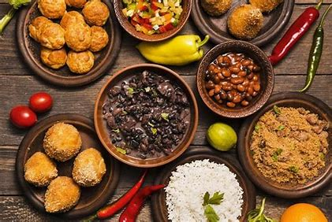

Bem-vindo ao mundo das delícias!
Vamos explorar juntos os sabores da culinária, desde os pratos mais tradicionais até as inovações gastronômicas.
Mídias Relacionadas à Culinária
| Descrição | Mídia |
|---|---|
| Salada de Frutas | |
| Sons instrumentais | |
| Prato Tradicional |
Tabela Nutricional de Alimentos
| Alimento | Calorias (kcal) | Proteínas (g) | Carboidratos (g) | Gorduras (g) |
|---|---|---|---|---|
| Arroz Integral | 124 | 2.6 | 25.8 | 0.9 |
| Frango Grelhado | 165 | 31.0 | 0.0 | 3.6 |
| Brócolis Cozido | 55 | 3.7 | 11.2 | 0.6 |
| Abacate | 160 | 2.0 | 8.5 | 15.0 |